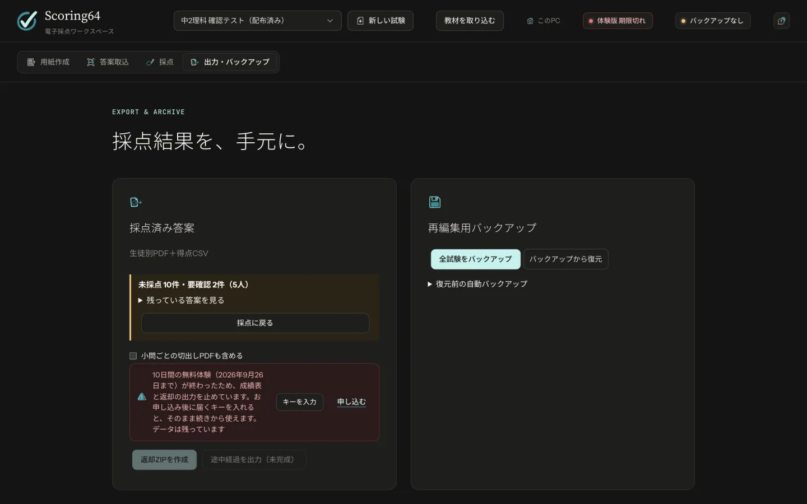

困ったとき
記号問題が「要確認」になる
塗りが薄い・一部だけの答え、2つ塗った答え、消し跡などが濃く残った答えは、自動で決めずに先生の確認に回します。丸で囲んだりチェックしたりしただけの答えも、原則として自動では答えと読まず、先生の確認に回します。
生徒には「枠の中を濃くはっきり塗りつぶす」よう伝えてください。答案はカラー（またはグレー）でスキャンしてください。
答案が「直すページ」に入る
QRコードが読めていないか、位置合わせに失敗しています。折れ・汚れ・大きな傾きがないか確かめ、200dpi以上で読み取り直してください。
縮小して印刷した用紙も読めますが、スキャンは印刷したときと同じ用紙サイズで行います。
解答欄の候補が出ない・足りない
Word・Excel から直接PDFに保存したファイルを使うと、見つかりやすくなります。足りない欄は「採点欄を追加」で描き足せます。
編集を元に戻したい
用紙作成では Ctrl + Z で戻せます。保存しないまま閉じた編集は、次に開いたときに右上に出る赤いカードの「編集を戻す」から戻せます。
画面が開かない
スタートメニューの「Scoring64」をもう一度開きます。すでに動いているときは、開いている画面に切り替わります。初めての起動は30秒ほどかかることがあります。
「返却ZIPを作成」が押せない
キーの期限が過ぎています。期限が過ぎると、成績表と返却データの出力だけが止まります。採点・バックアップ・復元はこれまでどおり使え、データも消えません。
新しいキーを「キーを入力」から貼り付けると、すぐに出力できます。


動作環境・データ
Mac で使えますか
いまお配りしているのは、Windows 10／11（64ビット）版です。Mac でお使いになりたいときは、お問い合わせください。
どのスキャナーを使えばいいですか
PDFで保存でき、200〜300dpiで読み取れるものなら使えます。塾の複合機で構いません。専用の読み取り機は要りません。
何枚もまとめて読み取れる（原稿を自動で送る）機種だと楽です。
答案や成績が、外部に送られることはありますか
ありません。答案の画像・成績・名簿は、塾のパソコンの中だけで処理します。使うときにインターネットへの接続も要りません。
何台のパソコンで使えますか
1つの教室の中なら、台数に上限はありません。同じキーをそれぞれのパソコンで登録します。
データはパソコンごとに保存されます。別のパソコンへ移すときは、バックアップを使います。
バックアップはどうすればいいですか
「出力・バックアップ」のタブの「全試験をバックアップ」で、すべての試験を1つのファイルに保存します。採点が終わるたびに取り、USBメモリなど別の場所にも置いてください。
画面の右上の点が緑ならバックアップ済み、黄色なら未作成か、前回から変更があります。